UDL > Delimiters
This section describes new options users have when defining delimiters.
Delimiters changed a lot in UDL 2.1.
The most obvious difference is the GUI, so we’ll start with that.
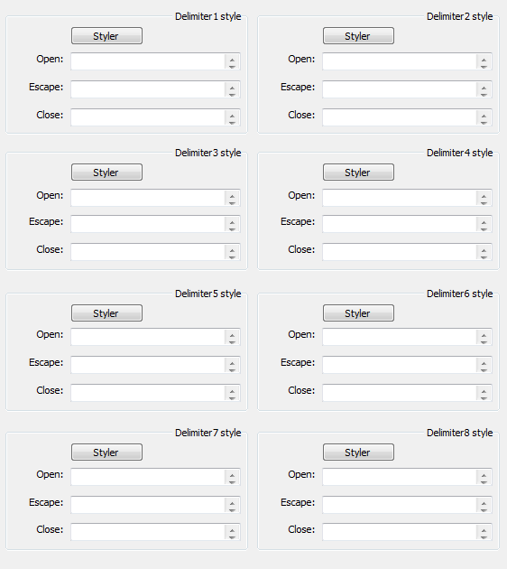
Just like in case of keywords, number of delimiter lists has been expanded to eight (as suggested by Don), if more is needed, please state so in discussion on Notepad++ forum. And each Delimiter now accepts its own Escape char. There have been numerous changes under the hood also, and we’ll cover them here through a series of short examples.
Usage examples
Example 1
First example is a simple C++ string.
Nothing fancy here.
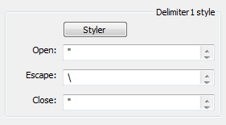
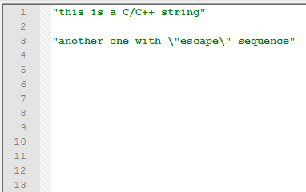
Example 2
This is little more interesting.
It is an attempt to define a line comment.
Notice how UDL’s special operator “(( ))” transforms string “EOL” into an end of line character. In fact it transforms it into a vector of three strings:
\r\n
\n
\r
So, it will find a line end regardless of your file format (unix/dos/osx)
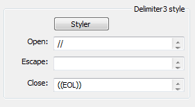
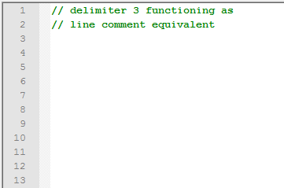
Example 3
Another interesting example.
C++ line comments support continuation to the next line, and there is just one continue character: backslash \
But there is a catch, C++ standard also defines something call digraphs and trigraphs. And a trigraph sequence for backslash is a ??/ (question mark twice than forward slash)
So, to have complete definition of C++ line comments, one must define both continue sequences. In UDL 2.1 you do that with special operator “(( ))". So, if two or more strings are defined inside of a special operator “(( ))", they are interchangeable.
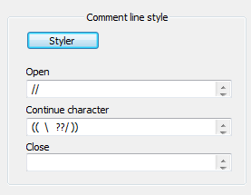
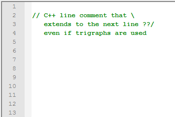
Example 4
In this example we define two different line comments.
first one is C++ style: //
second one is Python style: #
First thing to notice is how I aligned everything vertically.
In general, white space is not important when defining keywords, so you can use it any way you like it. It will be filtered out automatically.
Second thing to understand is grouping of Continue characters.
C++ line comment (the first group), defines two continue characters, Python line comment defines just one.
By using grouping with operator “(( ))” I was able to keep the logic of indexing and vertical aligning (both explained in comments section) and to make sure that “??/” applies only to C++ line comments.
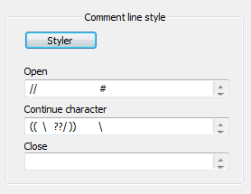
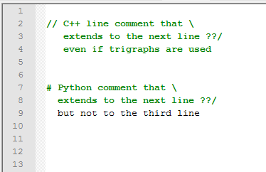
Example 5
If you need to use “((” and “))” as delimiter’s open/close keywords, just define them inside of “(( ))” operator.
Also this is the only exception of the rule that whitespace can be used freely. When defining “))” inside of special operator “(( ))” you must “glue” four consecutive close braces. Otherwise you will define an empty keyword set.
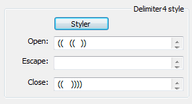
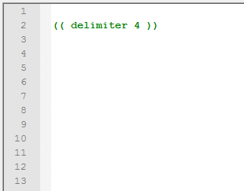
Nesting of delimiters
Comments and delimiters support nesting, and this can be used to define some complex operations.
Example 6
CoffeScript language defines its own regular expression syntax that is called hereRegex.
Funny thing about hereRegex syntax is that supports comments inside regular expression, but:
# this is a comment
#{ this is not a comment
Comments within hereRegex are everything after # character, but only if it is not followed by {. How do we solve this puzzle in UDL 2.1?
We need to define three delimiters.
- Delimiter 1 represents hereRegex
- Delimiter 2 represents special case when
#followed by a{does not start a line comment - Delimiter 3 are line comments inside hereRegex
Delimiter 1 and 2 have the same styling (so they would blend) and Delimiter 3 has a different style. Also, Delimiter 1 allows nesting of Delimiter 2 and 3. When all is set, hereRegex is highlighted as expected, with line comments in separate style.
This is possible because UDL 2.1 checks Delimiters by starting with Delimiter 1 and going up to Delimiter 8. When it reaches position #{ it detects Delimiter 2 simply because it tests for Delimiter 2 before testing for Delimiter 3.
So, when Delimiters overlap, always put longer strings first !
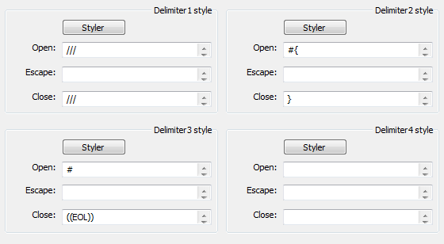
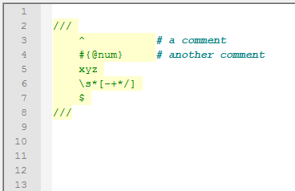
This page of the User Manual is derived and edited from Ivan Radić's udl-documentation, which he has maintained for Notepad++'s UDL 2.1 since 2015, under the CC BY 4.0 license.